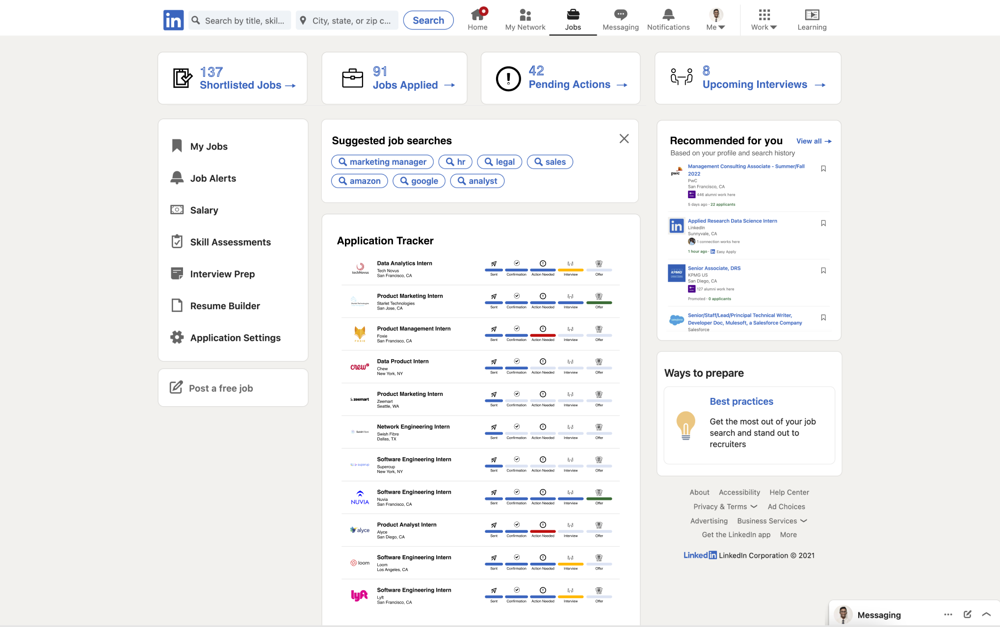

linkedin jobs - problem

The purpose of this project was to redesign the linkedin jobs page. Based on college students and friends I talked to, it seemed like everyone found the process of looking and applying for jobs on linkedin quite tedious and time consuming. They liked the roles with easy apply, but found that they were always going to external platforms (Google Sheets or Google Calendar) to keep track of applications and interview scheduling. The overall sentiment was the need for a centralized platform where you could apply easily and organize your job search effectively.
linkedin jobs - solution
The solution to this problem is a platform that manages your applications, provides insight on pending application items, and allows you to schedule your interviews. On the right is a mockup of this idea. It looks very similar to the current linkedin jobs page but adds a couple of crucial features. There are four tabs at the top of the page that provide information on the health of your job search and quick access to scheduling interviews or action items for applying. The main tab now is a list of all your applications with a tracker of where you are in the application process.